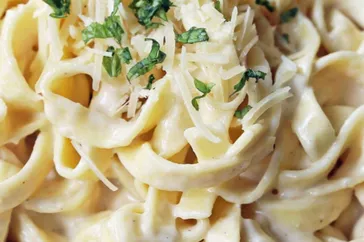

To Die For Fettuccine Alfredo

You'll find a detailed ingredient list and step-by-step instructions in the recipe below, but let's go over the basics:
- Pasta: Of course, you'll need fettuccine pasta.
- Butter: This Alfredo sauce starts with two sticks of butter.
- Cream: The rich sauce calls for almost a cup of heavy cream.
- Seasonings: The fettuccine Alfredo is simply seasoned with salt, pepper, and garlic salt.
- Cheese: You'll need Romano and Parmesan cheeses.
How to Make Homemade Fettuccine Alfredo
-
Cook the pasta.
-
Melt the butter and cream together on the stove, season, and stir in the cheese.
-
Toss the pasta in the cheese sauce.
Ingredients
- 24 ounces dry fettuccine pasta
- 1 cup butter
- ¾ pint heavy cream
- salt and pepper to taste
- 1 dash garlic salt
- ¾ cup grated Romano cheese
- ½ cup grated Parmesan cheese
Directions
-
Bring a large pot of lightly salted water to a boil. Add fettuccine and cook for 8 to 10 minutes or until al dente; drain.
-
Melt butter into cream in a large saucepan over low heat; add salt, pepper, and garlic salt. Increase the heat to medium; stir in grated Romano and Parmesan cheese until melted and sauce has thickened.
Add cooked pasta to sauce and toss until thoroughly coated; serve immediately.